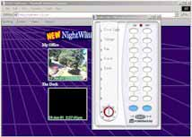

- privacy -
|
Hopefully, we are able to cover serious subjects and share opinions, while keeping a sense of humor. . Privacy Echelon Watch - Great site set up by the ACLU concerning Echelon. The Whole Earth Review Privacy Toolkit Anonymous Communications on the Internet Australian Privacy Commissioner www. Site itself contains some good 'real-world' (non-computer) privacy tips and a catalog of privacy books. |
. If you'd like to receive a printed copy of the advance program when it becomes available, be sure to include your snail mail address. org 2001 The Eleventh Conference on Computers, Freedom and Privacy, Cambridge, MA. Click here to add your name to our mailing list As of 2000 the Computers, Freedom and Privacy Conference has joined our long-time sponsor and become an official Association for Computing Machinery (ACM) conference. .
|  |
 |
This is also a good general privacy resources page. . EPIC Archive - Privacy PRIVACY "The right to be left alone -- the most comprehensive of rights, and the right most valued by a free people. General Info Hot Topics and New Resources CPNI (Customer Proprietary Network Information). (January 22, 2002) Digital Rights Management (DRM). |
|
New York Surveillance Camera Players Only someone completely distrustful of all government would be opposed to what we are doing with surveillance cameras. -- NYC Police Commissioner Howard Safir, 27 July 1999. About us After 11 September 2001 Founding Documents Funding and Expenses Getting Involved Museum Exhibitions Position Papers Privacy Policy U. .. |
further information: http://www.npr.org/about/privacypolicy.html